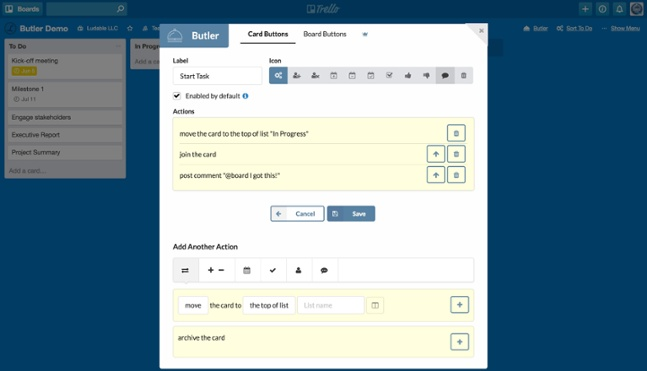

Blog
Blog

How To Bring The Magic Of Automation To Your Trello Boards
As a child, I used to go to an amusement park perched on a hill that overlooked my city. Aside from the usual rides, they also had a building that was a sort of magic arcade. In it, next to the house of mirrors, was my favorite attraction: the mechanical automaton museum. I spent many hours there mesmerized by the ornate vintage machines with complicated, precisely-timed mechanisms.
While I continue to love automata, these days I also find that wondrous feeling elsewhere. Trello, for example. It looks and feels simple and easy to use. It poses minimal barriers to entry. You “get it” right away. Yet, the more you use it, the more you realize how powerful and boundless it is. Making complex software is hard, but making complex software easy to use and understand is almost magical.
It also happens that Trello is a bit of a modern-day automaton fair. Did you know that you can have almost anything happen automatically in Trello? I am the creator of Butler for Trello, a popular automation tool for Trello inspired by the magic of those childhood experiences, and would like to introduce you to the world of Trello automation.
A Butler For Your Trello Boards
Imagine having an assistant that can be instructed to react to your actions on the board. You tell him: “When I move a card to the “Done” list, please mark the due date complete in a card, add a green label and post a comment saying ‘@board I got this’.” Then, every time you move a card to “Done,” those actions are performed on the card—as if by magic.
You can set up rules just like that one using the Butler Power-Up. Importantly, you don’t need to know any computer programming: the rules are entered in plain English.

There are so many ways that Butler can give you a hand, but here are some of my favorites:
- When a card is added to a list, automatically add a specific checklist, and then set a due date for X amount of days later.
- When you are added to a card, automatically copy that card to the top of the “To Do” list on your personal board and link the cards together.
- Every Saturday at 9:55am, copy five randomly-selected cards from list “Yoga Poses” to list “Saturday Practice.” (Highly specific but you get the idea!)
Butler is built and optimized specifically for Trello. It can respond to the widest variety of events, and perform a slew of actions to keep you and your team more productive, and your workflows more consistent. Butler also lets you add custom buttons to your Trello board and card view with predefined actions tailored to your workflow, turning repetitive actions into one-click shortcuts.

Butler can also perform scheduled tasks:
- Set it to create recurring tasks like “Add X card every Monday” or “Create new list at the first of every month”
- Automatically cleanup with commands to archive cards periodically
- Sort the cards in a list by title, due date, labels, or number of votes.
- You can even filter or sort cards based on a value set in a custom field, or by the age of the card.
It Takes A Village (And Some Zaps)
We often rely on multiple applications to get the job done: online forms or surveys to gather input, spreadsheets to crunch the data, email and social media tools to get the word out... and of course Trello to keep track of these steps so everyone is on the same page. Wouldn’t it be nice to have a conductor to keep the orchestra working together?
If you need to make things happen in other applications in response to Trello events, or the other way around, you can’t get any better than the Zapier Power-Up. With it, you can, for example, send a tweet, publish to a Facebook page, or send an email when a card is moved to “Publish.”

With connectors for more than 1,000 apps, from accounting to video conferencing, Zapier is a one-stop-shop for application integration. Its easy-to-use, form-based user interface makes it a breeze to build from the simplest 1:1 interactions between two products, to very complex command chains, called multi-step Zaps.
Be In Two (Or More) Places At Once
While Trello is all about sharing openly, sometimes we need to share different levels of detail with different people. Like when you want to keep the C-suite informed about the progress of your projects, but you don’t want to bother them with the bustle and micro-detail of the daily grind. In those occasions, you’d wish that some of your cards had body doubles that could exist in multiple boards.
Enter Board Sync by Unito, which mirrors entire boards or selected cards into other boards. Change a due date in your internal project board, and voila! the change appears in your client update board, as if by telepathy.

Pictured: A Trello board mirrored live in Jira.
The folks at Unito are actually synchronization experts, and offer multiple solutions to mirror Trello with other applications such as Asana, GitHub, JIRA or Wrike. The synchronization is fully-configurable, and you can choose which fields are synced between applications.
Wait, There’s More!
We’ve seen some of the most remarkable automation tools for Trello, but they’re not by any means the only ones out there. You can find an ever-growing array of solutions in the Automation section of the Trello Power-Ups directory.
I hope you find inspiration in this post to sprinkle some automation magic dust on your boards. The solutions above are currently helping teams of all sizes, from individuals to enterprises with thousands of users, to make the most of Trello by taking care of repetitive work in simple and elegant ways. And I’m biased, but I think it’s even fun to watch them do their thing.
What automated Trello tasks are you most fascinated by? Share your tips or questions in the comments below!